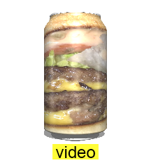
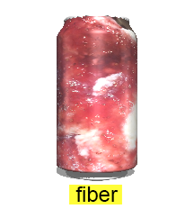
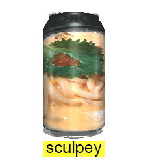
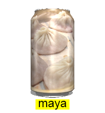
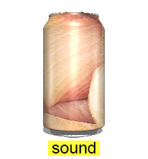
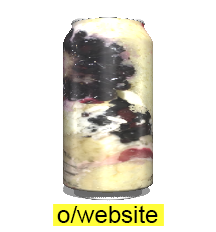
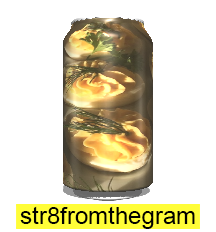

JOEY SCHER SHARES ! :~) :^) :'-) :~) :^) :'-) :~) :^) :'-) :~) :^) :'-) !!!
CV
DEMO REEL 2017
JOEY SCHER/ JOEY SHARES/ JOWEESHARE/ TRADERJOE_Y/ JODY CHAIR/ PHOSHOJO/ YOUTUBE SENSATION/ TRAGIMEDIAN/ ACADEMIC/ TEACHER'S PET/ JOKESTER







Your browser does not support the audio element.
Your browser does not support the audio element.
Your browser does not support the audio element.